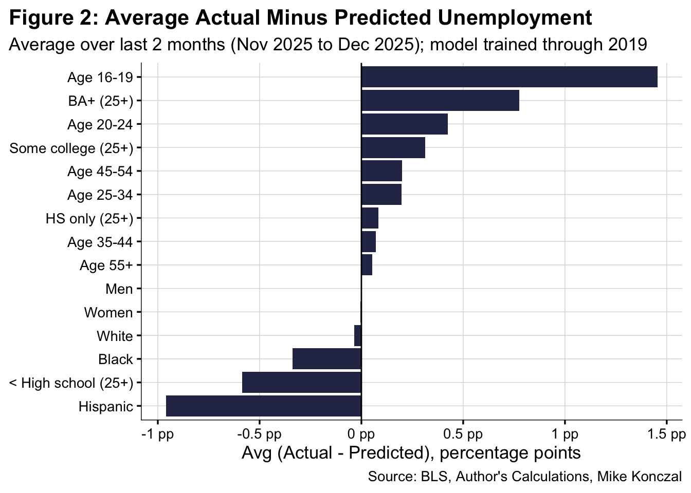
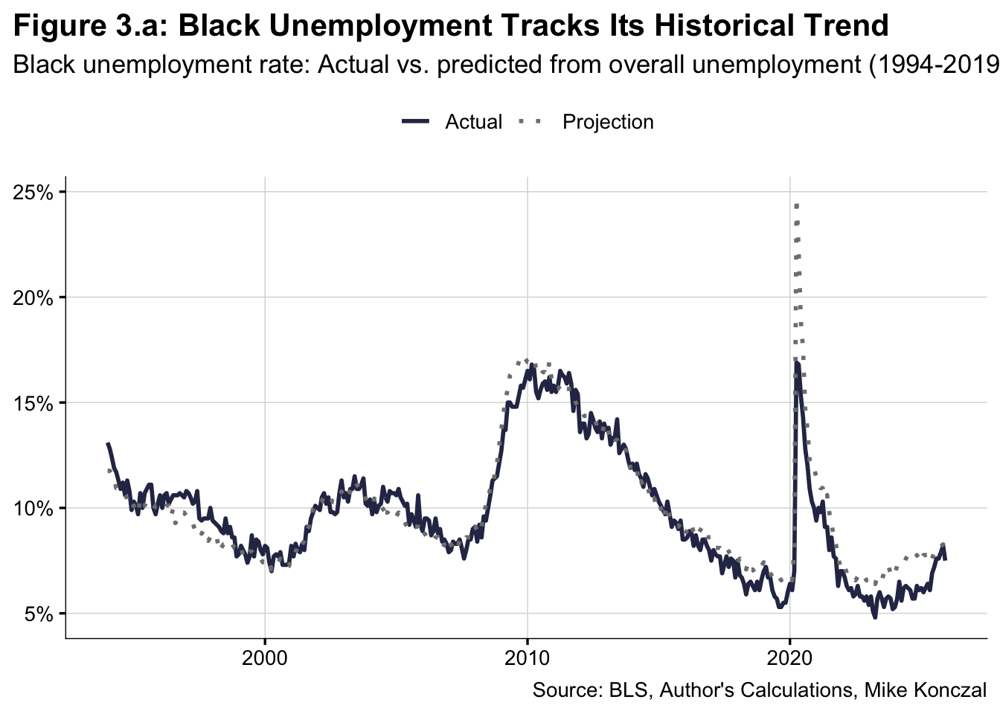
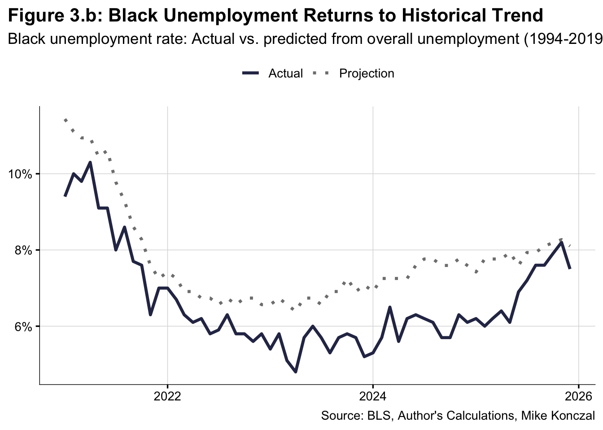
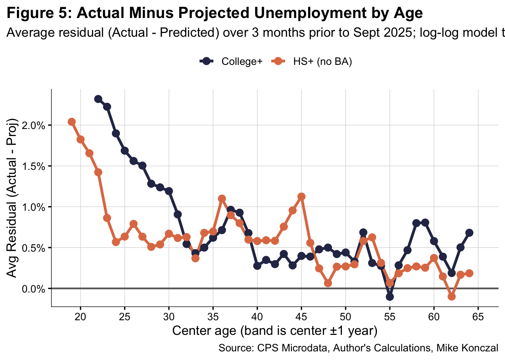

College-Educated Unemployment is Too High to Be Justified by the Weak Labor Market
Author
Mike Konczal
Published
January 28, 2026
I want to look at the labor market with fresh eyes as we go into 2026. And the first place I want to do this is the debate over the labor market prospects for people in their 20s with college degrees. This was a highly debated topic in 2025, one that I felt often moved too quickly into the question of the impact of large-language models (AI), rather than just the specific question of what is happening.
My weakly-held hot take a year ago would have been, channeling Joey Politano, who made the argument at the time, that AI could increase jobs in the short-run. My own experience has been that it makes productive workers far more productive, but the unreliability of what it concludes makes it difficult to automate positions that require certainty over how outcomes are determined. But I did worry that entry-level work would be vulnerable, both because of the way the career ladder is structured and because of bosses, wanting to cut corners, would try to haphazardly replace workers with AI there first.
And we did see unemployment increase for new college graduates. But, as friend of the blog Guy Berger would note, unemployment is also up for young people across the board, consistent with a weakening labor market and low hiring. Over the past two years, unemployment has increased 1 percentage point, from 3.5% to 4.5%.
Is there a way to distinguish if it’s increasing more than we’d expect?
Overview
Let’s build up to how we’re going to approach this. There are many unemployment rates, either for subgroups on race, gender, or age, and there are also types of attachment to the labor force. But they all tend to track the headline unemployment rate you hear about in the news, called U-3 unemployment, even over decades.
Let’s pick two example groups, men as well as workers aged 45-54, and see if their rise in unemployment tracks what we’d expect given overall increase. Let’s run a regression on their individual (log) unemployment rates versus the overall (log) unemployment rate for the years 1994 to 2019. We get an equation, which we then use to project forward to 2025. Note that this data is seasonally-adjusted by BLS and monthly. We get this:
Figure 1.a shows the full history back to 1994. The dotted lines are projections based on the log-log relationship between each group’s unemployment rate and overall unemployment, trained on data through 2019 (marked by the vertical dashed line). Notice how closely the actual values track the projections across multiple business cycles—through the dot-com bust, the Great Recession, and the COVID shock. This is the power of the approach: these relationships are remarkably stable over decades.
Figure 1.b zooms in on the post-pandemic period. Both men and 45-54 year-olds track almost perfectly with their expected values. The labor market slowdown since 2023 has increased unemployment across the board, but these groups are rising exactly as much as their historical relationship with U-3 would predict. Nothing unusual here.
We can extend this analysis across many demographic groups at once. I take unemployment rates by gender, race, age, and education, regress each against the overall unemployment rate through 2019, and calculate the average difference between actual and predicted values over the most recent 3 months:
Show code
# ---- Pull data using BLS API ----all_series_raw <-fetch_bls_series(c("LNS14000000", # Total"LNS14000001", # Men"LNS14000002", # Women"LNS14000003", # White"LNS14000006", # Black"LNS14000009", # Hispanic"LNS14000012", # Age 16-19"LNS14000036", # Age 20-24"LNS14000089", # Age 25-34"LNS14000091", # Age 35-44"LNS14000093", # Age 45-54"LNS14024230", # Age 55+"LNS14027659", # < HS"LNS14027660", # HS only"LNS14027689", # Some college"LNS14027662"# BA+))# Rename columnsall_series <- all_series_raw %>%rename(total = LNS14000000,men = LNS14000001,women = LNS14000002,white = LNS14000003,black = LNS14000006,hispanic = LNS14000009,age_16_19 = LNS14000012,age_20_24 = LNS14000036,age_25_34 = LNS14000089,age_35_44 = LNS14000091,age_45_54 = LNS14000093,age_55_plus = LNS14024230,edu_lt_hs = LNS14027659,edu_hs = LNS14027660,edu_some_college = LNS14027689,edu_ba_plus = LNS14027662 )# ---- Pivot to long format ----all_long <- all_series %>%pivot_longer(-date, names_to ="series_name", values_to ="value") %>%filter(!is.na(value))# ---- Get total unemployment as regressor ----total_unrate <- all_long %>%filter(series_name =="total") %>%select(date, total_unrate = value)# ---- Join and prepare regression panel ----regression_panel <- all_long %>%filter(series_name !="total") %>%left_join(total_unrate, by ="date") %>%filter(!is.na(total_unrate))# ---- Fit per-series log-log models (train through 2019) + predict all dates ----fit_loglog_model <-function(df) { train_data <- df %>%filter(year(date) <=2019)if (nrow(train_data) <12) {# Not enough training data, return emptyreturn(df %>%mutate(prediction =NA_real_, diff =NA_real_) %>%filter(FALSE)) } mod <-lm(log(value) ~log(total_unrate), data = train_data) df %>%mutate(prediction =exp(predict(mod, newdata = df)),diff = value - prediction )}results <- regression_panel %>%filter(value >0, total_unrate >0) %>%group_by(series_name) %>%group_modify(~fit_loglog_model(.x)) %>%ungroup() %>%filter(!is.na(diff))# ---- Average (actual - predicted) over last 2 months, per series ----last_date <-max(results$date, na.rm =TRUE)cutoff <-floor_date(last_date %m-%months(1), unit ="month") # 2 months inclusiveavg_diff_2m <- results %>%filter(date >= cutoff) %>%group_by(series_name) %>%summarise(avg_diff_2m =mean(diff, na.rm =TRUE),.groups ="drop" )# ---- Create nice labels ----label_lookup <-c(men ="Men", women ="Women",white ="White", black ="Black", hispanic ="Hispanic", asian ="Asian",age_16_19 ="Age 16-19", age_20_24 ="Age 20-24", age_25_34 ="Age 25-34",age_35_44 ="Age 35-44", age_45_54 ="Age 45-54", age_55_plus ="Age 55+",edu_lt_hs ="< High school (25+)", edu_hs ="HS only (25+)",edu_some_college ="Some college (25+)", edu_ba_plus ="BA+ (25+)")avg_diff_2m <- avg_diff_2m %>%mutate(label = label_lookup[series_name]) %>%filter(!is.na(label)) %>%arrange(avg_diff_2m)# ---- Bar chart ----fig_2 <-ggplot(avg_diff_2m, aes(x = avg_diff_2m, y =reorder(label, avg_diff_2m))) +geom_col(fill ="#2c3254") +geom_vline(xintercept =0, linewidth =0.5) +scale_x_continuous(labels =function(x) paste0(x, " pp")) +labs(title ="Figure 2: Average Actual Minus Predicted Unemployment",subtitle =paste0("Average over last 2 months (",format(cutoff, "%b %Y"), " to ", format(last_date, "%b %Y"),"); model trained through 2019" ),x ="Avg (Actual - Predicted), percentage points",y =NULL,caption ="Source: BLS, Author's Calculations, Mike Konczal" ) + my_styleggsave(filename =file.path(plot_dir, "figure-2.png"),plot = fig_2,width = plot_width,height = plot_height,dpi = plot_dpi)fig_2

Most groups cluster right around zero—their unemployment rates are exactly where you’d expect given the current level of overall unemployment. But BA+ stands out with unemployment notably higher than its historical relationship would predict. Something is different about college-educated workers.
Many, including myself, have noted the statistically significant increase in black unemployment over the past year. Let’s look at this more closely:
Show code
# ---- Fit model pre-2020: Black unemployment on overall unemployment ----model_black <-lm(log(black_unrate) ~log(full_unrate),data = unrate %>%filter(year(date) <2020))# ---- Add prediction ----unrate <- unrate %>%mutate(predict_black =exp(predict(model_black, newdata = unrate)))# ---- Long format for 2-line plot ----plot_black <- unrate %>%transmute( date,actual = black_unrate,projection = predict_black ) %>%pivot_longer(-date, names_to ="type", values_to ="value") %>%mutate(type =recode(type, actual ="Actual", projection ="Projection") )# ---- Full history plot (Figure 3.a) ----fig_3a <- plot_black %>%ggplot(aes(x = date, y = value, color = type, linetype = type)) +geom_line(linewidth =1) +scale_color_manual(values =c("Actual"="#2c3254", "Projection"="gray50")) +scale_linetype_manual(values =c("Actual"="solid", "Projection"="dotted")) +scale_y_continuous(labels =percent_format(accuracy =1)) +labs(title ="Figure 3.a: Black Unemployment Tracks Its Historical Trend",subtitle ="Black unemployment rate: Actual vs. predicted from overall unemployment (1994-2019)",x =NULL,y =NULL,color =NULL,linetype =NULL,caption ="Source: BLS, Author's Calculations, Mike Konczal" ) + my_styleggsave(filename =file.path(plot_dir, "figure-3a.png"),plot = fig_3a,width = plot_width,height = plot_height,dpi = plot_dpi)fig_3a

Show code
# ---- Post-2021 zoom plot (Figure 3.b) ----fig_3b <- plot_black %>%filter(year(date) >=2021) %>%ggplot(aes(x = date, y = value, color = type, linetype = type)) +geom_line(linewidth =1.2) +scale_color_manual(values =c("Actual"="#2c3254", "Projection"="gray50")) +scale_linetype_manual(values =c("Actual"="solid", "Projection"="dotted")) +scale_y_continuous(labels =percent_format(accuracy =1)) +labs(title ="Figure 3.b: Black Unemployment Returns to Historical Trend",subtitle ="Black unemployment rate: Actual vs. predicted from overall unemployment (1994-2019)",x =NULL,y =NULL,color =NULL,linetype =NULL,caption ="Source: BLS, Author's Calculations, Mike Konczal" ) + my_styleggsave(filename =file.path(plot_dir, "figure-3b.png"),plot = fig_3b,width = plot_width,height = plot_height,dpi = plot_dpi)fig_3b

Here we can see black unemployment has returned to its longer-term trend. The tight labor market and full employment environment of 2021-2023 especially benefited Black workers—the black unemployment rate fell much further than historical patterns would predict, and the black-white unemployment gap collapsed to record lows. It’s a sad fact that this progress has reversed. As the labor market has cooled, black unemployment has returned to its historical relationship with overall unemployment, and the gap has widened back to where we’d expect it to be.
Young People
Now I want to look at the college-educated more closely. Let’s take data from the New York Fed’s The Labor Market for Recent College Graduates website. These are 22-27 year olds, where recent grads are those with a completed 4-year BA or higher and young workers are everyone else. Let’s run the same regression from 1990 to 2019, and project:
As you can see, people in their 20s more or less tracks exactly what we’d expect given the labor market slowdown. That is real. But young college is much higher than the trendline we’d expect. It was higher throughout, which may be an element of unemployment just being quite low in the 2022-2023 period. But as it increases, young college educated unemployment is increasing faster than we’d expect from the slowdown.
Disclaimer: I want to make sure you understand two points I’m not making here. I’m not saying it’s just college-educated workers who have higher unemployment. Everyone does. I’m also not saying college-educated workers have higher unemployment than non-college educated workers. They don’t. They just have higher unemployment than what you would have guessed from historical experience given the current unemployment rate. These are both obvious from the graphic, but it’s worth taking a second and remembering this.
I stress these results multiple ways, taking just certain years, taking all years, and so forth. I believe they are robust to specification.
We’d see a similar, though less dramatic divergence, pattern if we ran this on all BAs and high-school diplomas for ages 25+, which the BLS has online. But my guess is that this is most impactful for young people, and I want to see the age range where this divergence is most dramatic.
So I take the BLS microdata from IPUMS and create my own categories. I use 12-month rolling values instead of trying to seasonally adjust the data. I take 3-year age bands (so, e.g., 22-24 for age 23) for college-plus and non-college (everyone without a BA). The College+ series starts at ages 21-23, and the HS+ series starts at ages 18-20. I then run a log-log regression on the prediction line from 1994 to 2019 and take the average difference between the projected and the actual over the past 3 months. I then chart it across the age spectrum:
Show code
# Assuming age_diff.csv exists in your directoryage_diff <-read_csv("data/age_diff.csv")# ── One graphic: age on x, avg residual on y ─────────────────────────────fig_5 <-ggplot(age_diff, aes(x = center_age, y = diff_avg, color = edu_group)) +geom_hline(yintercept =0, linewidth =0.8, color ="gray40") +geom_line(linewidth =1.3) +geom_point(size =3) +scale_color_manual(values =c("College+"="#2c3254", "HS+ (no BA)"="#e07b53")) +scale_y_continuous(labels =percent_format(accuracy =0.1)) +scale_x_continuous(breaks =seq(20, 65, 5), limits =c(19, 65)) +labs(title ="Figure 5: Actual Minus Projected Unemployment by Age",subtitle =paste0("Average residual (Actual - Predicted) over last 3 months; log-log model trained 1994-2019; College+ starts at 21-23, HS+ starts at 18-20" ),x ="Center age (band is center ±1 year)",y ="Avg Residual (Actual - Proj)",color =NULL,caption ="Source: CPS Microdata, Author's Calculations, Mike Konczal" ) + my_styleggsave(filename =file.path(plot_dir, "figure-5.png"),plot = fig_5,width = plot_width,height = plot_height,dpi = plot_dpi)fig_5

For someone who is 24 (the age-range 23-25) with a BA+, they have unemployment that is 2 percentage points more than we’d expect based on their historical relationship with overall unemployment. That excess fades steadily and largely disappears by the mid-30s. Non-college workers are also slightly above zero, but the pattern is relatively flat across all ages. The gap between the two lines at young ages—and their convergence by middle age—is what I find striking.
A fair question: why are both lines above zero for most of the age range? Diagnostics suggest a small upward bias in the level of the residuals even before the pandemic. In pre‑COVID holdout tests (training through 2014 or 2017 and testing 2015‑2019), the mean residual is modestly positive across groups, and the all‑ages line is slightly above zero too. A smearing correction and a level‑level regression reduce this bias a bit but do not eliminate it, which points to back‑transform bias and slow drift in the subgroup‑overall relationship rather than a unique shock to any one group.
Does this matter? It matters for the level, so the right comparison is to a pre‑2019 baseline, not to zero. When I compare 2015‑2019 to 2023‑2025, the College+ residual rises by about 0.2pp on average and by roughly 1pp for ages 21‑27, while HS+ is essentially flat and <HS is lower. That pattern is why I focus on the gap between young College+ and non‑college—after re‑centering, the gap remains and is concentrated among the young.
A note on data: One popular study element is to compare where the unemployed are coming from. However I think this breaks down, because so many of the young college educated are “new entrants,” who record a missing value for this category. So it’s difficult to say where exactly they would have been employed in a lower unemployment counterfactual.
Is It Just More College Graduates?
One natural question: could this simply be a composition effect? If the share of young people with college degrees has increased substantially, perhaps the labor market is just absorbing a larger pool of graduates, pushing marginal candidates into unemployment.
The data doesn’t support this explanation. Among 24-27 year olds, the share with a bachelor’s degree (excluding graduate degrees) was 22% in 2000, rose to 25% by 2019, and sits at 26% in 2024. That’s a modest increase—about 4 percentage points over nearly a quarter century—and the 2019-to-2024 change is just 1 percentage point. The share with graduate degrees has similarly inched up from 5% to 7% over this period.
Meanwhile, the share with “some college” (including associate’s degrees) has actually declined, from 30% in 2000 to 24% in 2024, as more students complete their degrees rather than stopping partway. The share with only a high school diploma has held roughly steady at around 25%.
These are gradual, long-running trends—not a sudden surge that would explain a sharp divergence in unemployment patterns since 2022. The elevated unemployment for young college graduates appears to reflect something about labor demand or matching, not a flood of new degree-holders overwhelming the market.
Conclusion
Let me be precise about what I am and am not saying here.
What I am not saying: I am not claiming that only college-educated workers face elevated unemployment—everyone does, as the labor market has cooled from its 2022-2023 peak. I am also not claiming that college-educated workers have higher unemployment rates than non-college workers. They don’t. A BA still confers significant labor market advantages, and that remains true today.
What I am saying: Young college-educated workers have unemployment rates that are higher than what their historical relationship with overall unemployment would predict. This is not true for most other demographic groups. Men, women, workers aged 45-54, and young non-college workers all track their historical patterns almost exactly. Black workers, who saw extraordinary gains during the full employment period, have sadly returned to their historical trend—but they are not above it. College-educated workers, particularly those in their early-to-mid 20s, are the outlier.
The magnitude is meaningful: roughly 2 percentage points of “excess” unemployment for workers around age 24, declining steadily until it disappears by the mid-30s. This pattern—concentrated among the young and fading with age—suggests something specific to labor market entry rather than a broad collapse in demand for educated workers.
What’s driving this? I don’t know yet. It could be AI-related disruption to entry-level knowledge work. It could be a hangover from over-hiring during 2021-2022. It could be structural changes in how firms recruit and train new graduates. It could be some combination of all three, or something else entirely. Future posts will dig into these possibilities.
But the pattern itself is clear and robust across multiple data sources and specifications. Something is different for young college graduates in this labor market, and it’s worth taking seriously.